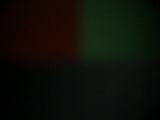
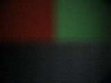
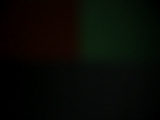
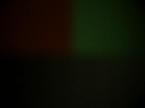
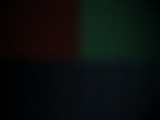

Referencia:

| s:0x00 bit 5 0x1f → 0x3f | cor (16 medidas) rampa (16 medidas) brilho 30.05 (ref 12.5) |  |
| s:0x00 bit 4 0x1f → 0x0f | cor (15 medidas) rampa (15 medidas) brilho 4.60 (ref 12.5) | |
| s:0x00 bit 3 0x1f → 0x17 | cor (14 medidas) rampa (14 medidas) brilho 7.75 (ref 12.5) |  |
| s:0x00 bit 2 0x1f → 0x1b | cor (6 medidas) | |
| s:0x01 bit 7 0x8c → 0x0c | cor (3 medidas) |  |
| s:0x01 bit 6 0x8c → 0xcc | cor (7 medidas) |  |